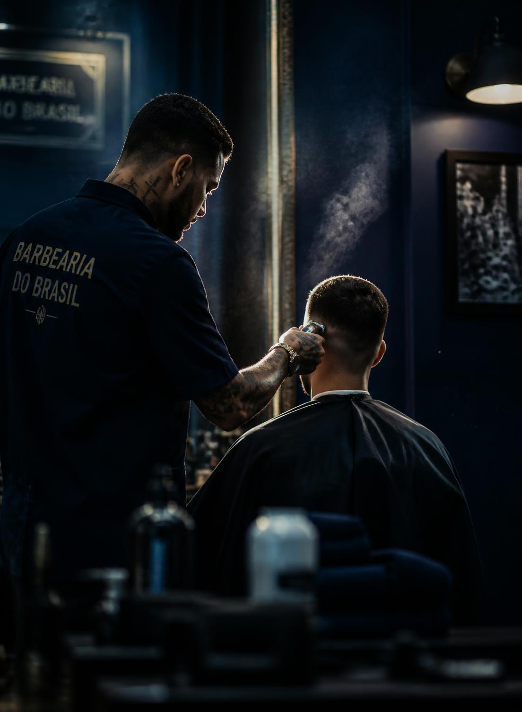
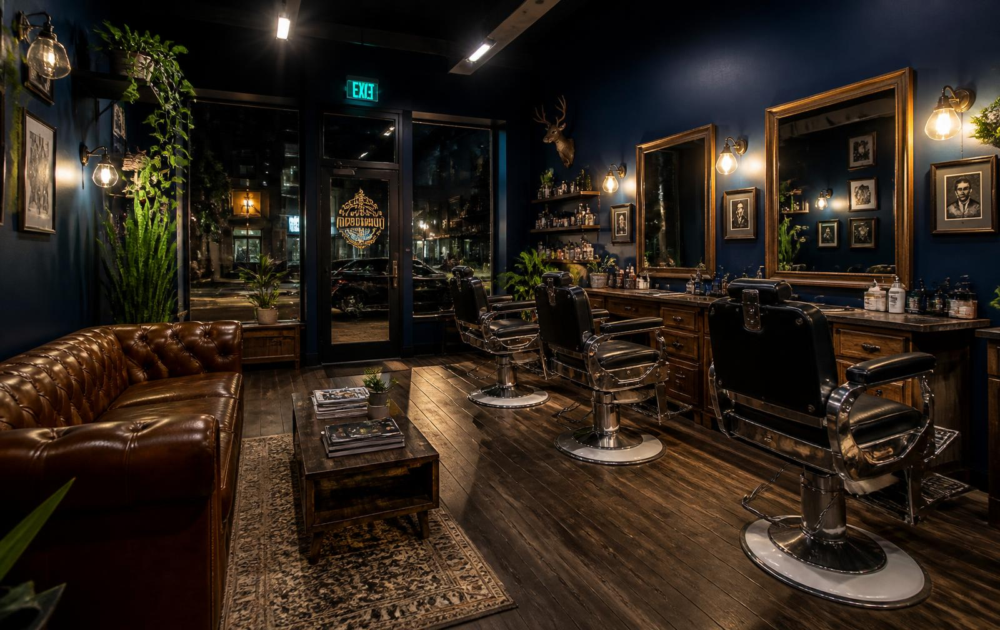
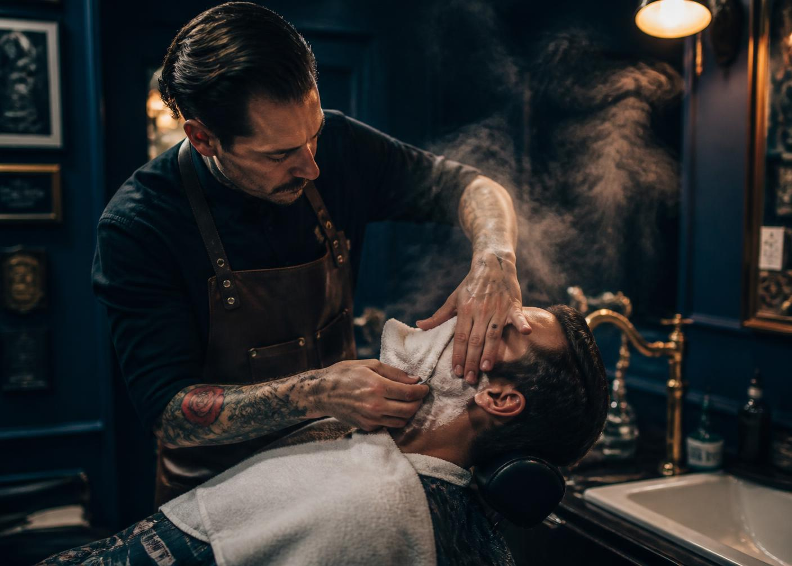
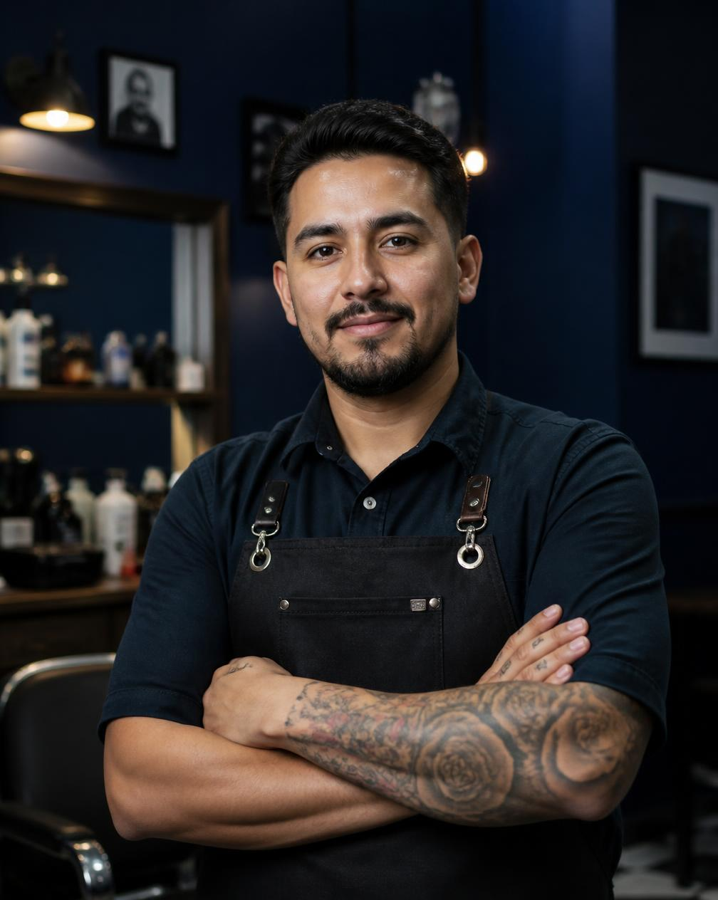

Lauzane Paulista · São Paulo · desde sempre no bairro
RecantodoCorte
Barbearia de bairro com acabamento de estúdio. Um espaço aconchegante onde ninguém tem pressa — e o corte sai do jeito que você imaginou.

01 — A casa
Um recantono Lauzane
A Barbearia Recanto Do Corte nasceu da ideia simples de ter, no bairro, um lugar onde o cliente entra e desacelera. Luz baixa, cadeira confortável, conversa boa — e um corte feito sem relógio apertando.
É por isso que o espaço aconchegante é o que mais aparece nos comentários: o cuidado com o acabamento vem junto com o tempo que a gente dedica a cada pessoa na cadeira.


imagens provisórias · substituir por fotos reais do espaço
Espaço aconchegante
Nosso principal diferencial. Luz baixa, som na medida, poltrona confortável e ninguém com pressa. Você fica à vontade do primeiro ao último minuto.
Clientela que volta
A maior parte da agenda é de gente que já senta na cadeira há tempos — e que traz amigo, irmão e filho junto.
Corte pensado, não repetido
Antes da máquina ligar, a gente conversa. Formato de rosto, rotina e tempo de manutenção definem o corte.
Bairro, não shopping
No Lauzane Paulista, com estacionamento na rua e aquele clima de barbearia de bairro que todo mundo procura.
02 — Serviços & agendamento
Monte seu horáriona cadeira certa
Escolha os serviços, diga quando pode vir e a gente já recebe tudo organizado no WhatsApp. Sem formulário, sem espera.
Passo 1 — o que você quer fazer
Passo 2 — quando
Passo 3 — seu nome (opcional)
03 — Trabalhos
Na cadeirae no espelho

imagens provisórias · substituir pelas fotos do Instagram
04 — Quem senta, volta
O que dizem
“Ambiente muito acolhedor e atendimento impecável. Saí com o melhor corte que já fiz na região.”
Cliente Google
“Profissionais atenciosos, capricho nos detalhes e um espaço confortável para esperar. Recomendo demais.”
Cliente Google
“Levei meu filho e fomos tratados super bem. Virou nossa barbearia oficial no Lauzane.”
Cliente Google
05 — Dúvidas
Perguntas
- Precisa agendar horário?
- Recomendamos. Chamando no WhatsApp você garante o horário e evita espera, principalmente no fim de semana.
- Quais serviços vocês fazem?
- Corte de cabelo, barba tradicional, corte + barba, acabamento, sobrancelha e corte infantil.
- Onde ficam e tem estacionamento?
- Av. Coronel Manuel Py, 329 — Lauzane Paulista, São Paulo. Estacionamento na rua, em frente à barbearia.
- Quais formas de pagamento?
- Fale com a gente no WhatsApp para confirmar as formas de pagamento disponíveis no momento.
08 — Onde ficamos
Venhatomar um café
- Endereço
- Av. Coronel Manuel Py, 329 — Lauzane Paulista, São Paulo — SP, 02442-090
- Telefone / WhatsApp
- (11) 95736-3517
- Horários
- Funcionamos todos os dias úteis e aos sábados. Confirme o horário exato pelo WhatsApp — a agenda do dia é atualizada por lá.
- @recantodocorte_